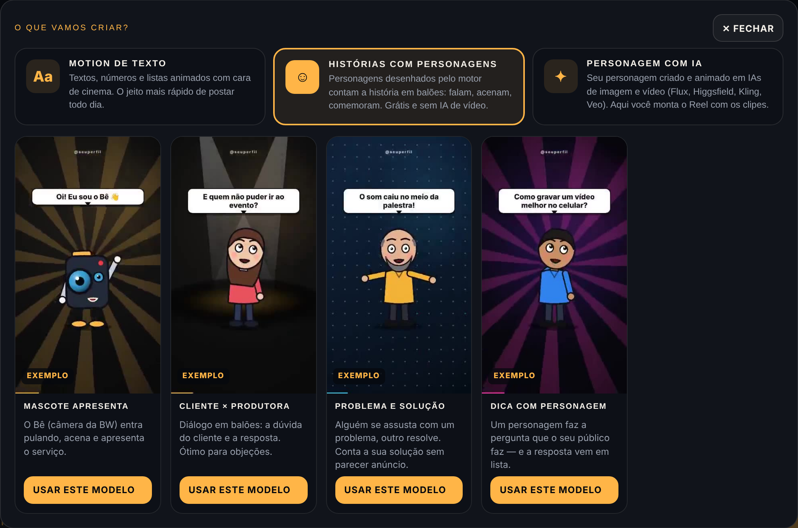
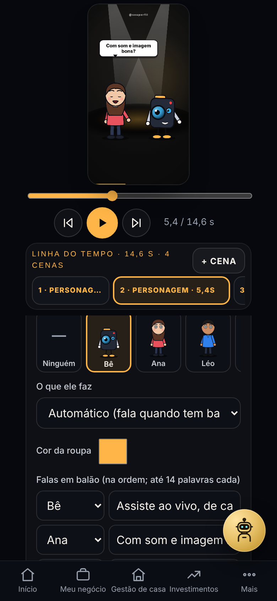

09 · Marketing
BW Reels Pro: modelos, personagens e IA
Toque em 🎬 MODELOS (ou + NOVO) para ver o que dá para criar, com um vídeo de exemplo tocando em cada modelo. Toque em USAR ESTE MODELO: o reel abre pronto e você só troca os textos.

As três categorias, com exemplos em vídeo.
- 1MOTION DE TEXTO: dica rápida, número que impressiona, frase de impacto, anúncio de evento e mito ou verdade. Ou A IA CRIA PARA MIM: você diz o assunto e a IA escreve ganchos e roteiro.
- 2HISTÓRIAS COM PERSONAGENS: o Bê (câmera da BW), Ana, Léo, Bia, Rui e o Robô aparecem, acenam, falam em balões, pensam, se assustam e comemoram — desenhados pelo motor, grátis. Na aba CENA escolha até 2 personagens, o que cada um faz, a cor da roupa, as falas, o cenário e como entram.
- 3PERSONAGEM COM IA: preencha como ele é e o que faz; a plataforma monta o prompt da imagem e o prompt do vídeo (✨ CAPRICHAR COM IA melhora). Gere no Flux, anime no Higgsfield, Kling ou Veo e importe os clipes no modelo pronto.

Editor da cena de personagem.
Combinado de uso
Personagem só original ou seu: nada de personagem famoso nem rosto de pessoa real sem autorização. Vídeo com personagem de IA realista leva o selo “Feito com IA” ao postar.